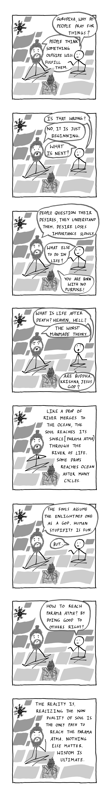

☀︎
You are here ⤵
Blog / The Curse of Nationality
13:06 | June 1, 2026 |
Some questions stay hidden inside us for years. Why do we pray? What is purpose? What happens after death?
This comic is not an attempt to give final answers, but a reflection on the journey of questioning itself. Many people spend life searching outside for fulfillment, validation, identity or even God, while slowly forgetting to understand their own consciousness. The conversation in this comic explores an old spiritual idea found across many philosophies. That wisdom begins when a person starts observing the self beyond fear, labels and blind belief. Whether one agrees or disagrees, the intention is to spark thought, introspection and deeper conversations about existence, purpose and the nature of reality.

Think about it!
೧:೦೬ | ಮೇ ೧, ೨೦೨೬ |
ಕೆಲವು ಪ್ರಶ್ನೆಗಳು ನಮ್ಮೊಳಗೆ ವರ್ಷಗಳ ಕಾಲ ಮೌನವಾಗಿ ಉಳಿದುಕೊಳ್ಳುತ್ತವೆ. ನಾವು ಏಕೆ ಪ್ರಾರ್ಥಿಸುತ್ತೇವೆ? ಜೀವನದ ಉದ್ದೇಶ ಏನು? ಮರಣದ ನಂತರ ಏನಾಗುತ್ತದೆ?
ಈ ಕಾಮಿಕ್ ಅಂತಿಮ ಉತ್ತರಗಳನ್ನು ನೀಡುವ ಪ್ರಯತ್ನವಲ್ಲ. ಪ್ರಶ್ನಿಸುವ ಪ್ರಯಾಣದ ಬಗ್ಗೆ ಇರುವ ಒಂದು ಚಿಂತನೆ ಮಾತ್ರ. ಅನೇಕರು ಜೀವನಪೂರ್ತಿ ತೃಪ್ತಿ, ಮಾನ್ಯತೆ, ಗುರುತು ಅಥವಾ ದೇವರನ್ನು ಹೊರಗಿನ ಜಗತ್ತಿನಲ್ಲಿ ಹುಡುಕುತ್ತಾ, ತಮ್ಮ ಸ್ವಂತ ಚೇತನೆಯನ್ನು ಅರಿಯುವುದನ್ನೇ ನಿಧಾನವಾಗಿ ಮರೆತುಬಿಡುತ್ತಾರೆ. ಈ ಕಾಮಿಕ್ನ ಸಂಭಾಷಣೆ ಹಲವು ತತ್ತ್ವಶಾಸ್ತ್ರಗಳಲ್ಲಿ ಕಾಣುವ ಒಂದು ಪ್ರಾಚೀನ ಆತ್ಮೀಯ ಕಲ್ಪನೆಯನ್ನು ಅನ್ವೇಷಿಸುತ್ತದೆ. ಭಯ, ಗುರುತುಗಳು ಮತ್ತು ಅಂಧನಂಬಿಕೆಗಳಾಚೆಗೆ ಹೋಗಿ, ಒಬ್ಬ ವ್ಯಕ್ತಿ ತನ್ನನ್ನೇ ಗಮನಿಸಲು ಆರಂಭಿಸಿದಾಗ ನಿಜವಾದ ಜ್ಞಾನ ಪ್ರಾರಂಭವಾಗುತ್ತದೆ. ಒಪ್ಪಿಕೊಂಡರೂ ಅಥವಾ ವಿರೋಧಿಸಿದರೂ, ಇದರ ಉದ್ದೇಶ ಅಸ್ತಿತ್ವ, ಜೀವನದ ಉದ್ದೇಶ ಮತ್ತು ವಾಸ್ತವದ ಸ್ವಭಾವದ ಕುರಿತು ಆಳವಾದ ಚಿಂತನೆ ಹಾಗೂ ಸಂವಾದಗಳನ್ನು ಪ್ರೇರೇಪಿಸುವುದಾಗಿದೆ.

ಇದರ ಬಗ್ಗೆ ಚಿಂತಿಸಿ!